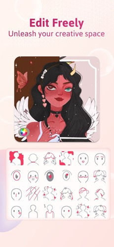
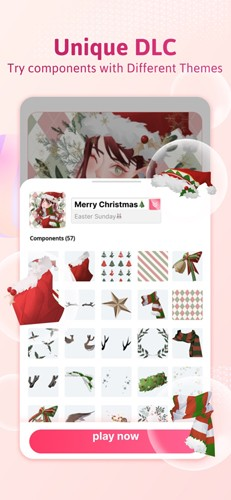

Neku 迭代观察：一款头像定制工具，为什么在"灵活"和"稳妥"之间反复横跳
从模板锁定肤色到表情三件套配合，从帽子 VIP 限定到背景暗示故事，观察 Neku 在灵活度与稳妥性之间的取舍逻辑，反推它的迭代规律和下一步走向。
我第一次用Neku官网的时候，安装包从官方下载拿，第一反应是——它在一些地方异常灵活，在另一些地方又异常顽固。
灵活到什么程度？模板选好之后，脸型的下颌宽度、额头高度、下巴尖度、脸部长度都能用滑杆拉到极端值，方圆长短之间几乎没有不可触及的脸型。眉毛有平直、弯曲、厚重三种基本风格十几款可选，颜色还能独立调，银发配深灰眉这种常见搭配完全没问题。表情系统更有意思——嘴型、眼睛、眉毛三件套一起配合，能精准调出开心、难过、生气、惊讶、傲娇五种情绪，每一种都有明确的部件组合逻辑。配饰层面，圆框眼镜配西装暗示知识分子、眼罩配伤痕贴纸暗示战士、驯鹿角发饰配毛衣暗示温暖治愈系，一两个小物件就能传递角色身份。背景也不是随便选的——书桌台灯笔记本对应学生学者设定，森林树影光斑对应自然精灵设定，赛博朋克街区霓虹对应未来科幻设定。
但顽固到什么程度？肤色一经模板选定就锁死了，后续没有任何调整入口。开发者给出的理由是肤色涉及五官阴影和腮红的色号联动，开放调节容易导致穿帮——我实测过同类应用，确实很少有能把肤色调得不出错的，锁死反而是稳妥的选择。眉毛没有"无眉"选项，最低只能调到极细，想做外星人风格或光头角色的用户只能凑活。帽子里 VIP 限定款的比例比其他配饰高，尤其是节日主题包的限定帽，基本都是付费独占。少数帽子有可调参数（帽檐宽度、颜色、徽章），但大部分没有滑杆。
这种反差感太有意思了。它让我好奇：Neku 是怎么走到今天这一步的？那些灵活的部分是怎么一步步加进来的？那些顽固的部分是一直就那样，还是曾经想过开放但放弃了？
来路：从模板起步到故事感暗示
后来去Neku文档翻了一下才确认，文档里没有写版本号和更新日志，所以我只能从功能的层次结构反推迭代路径。但文档没提的部分恰恰说明一件事——Neku 的开发者不喜欢大张旗鼓地 changelog，更倾向于让功能自然地长在已有的骨架上，而不是每次更新都推翻重来。
最早的核心应该是模板系统。选好模板后脸型能大范围调整，这说明模板的定位更像是"起点"而非"终点"——开发者从一开始就不想让用户被模板框死。但肤色锁死这个设计，我猜是在早期就定下来的，而且很可能是踩过坑之后的决策。开放肤色调配的复杂度远超一般用户的想象，阴影、腮红、眼部高光这些附属元素的色号必须跟肤色联动，任何一个环节没跟上就会穿帮。干脆锁死，省了用户的麻烦，也省了自己维护多个联动参数的成本。

然后加的应该是五官部件的可替换系统。眉毛十几种样式、眼睛有不同形状、嘴型有多种选择，这一层是在模板骨架之上搭的第一个"可插拔"模块。眉毛颜色独立调、跟头发色板分开，这个细节很能说明问题——开发者在部件之间做了"有限解耦"，既不强制眉毛颜色跟着头发走，也不开放完全自由的调色板，而是给了一套预设色板，在灵活和可控之间找平衡。
接下来是表情系统。单独换嘴就能变表情，但效果单一；三件套一起配合才能精准调出情绪——这说明表情功能不是一次性设计好的，而是从"换嘴"这个最简版本迭代到了"三件套联动"的完整方案。那个情绪-嘴型-眼睛-眉毛的对应表格，大概率是开发者内部调试时积累下来的经验值，后来直接写进了文档。

再往后是配饰和背景的"故事感暗示"。帽子、眼镜、纹身这些小配饰能快速传递身份，背景选择能暗示角色设定——这一层我觉得是 Neku 的差异化竞争力所在。同类应用大多停留在"部件替换"层面，Neku 走到了"组合暗示"这一步。而且它刻意不做"堆砌"，文档里明确说一两个暗示就够，多了反而乱——这个指导原则本身就是产品观的体现。
VIP 限定帽子的出现，应该是商业化尝试的结果。节日主题包、限定款独占，这是很成熟的变现模式，但比例比其他配饰高这件事，说明帽子可能是 Neku 里设计成本最高的单品。兜帽/头套这种完全盖住发型的类型，甚至会让精心调好的发型白调——开发者没有在"帽子遮挡发型"这个问题上做技术优化，而是直接让用户自己选遮挡程度不同的帽子类型。这个决策很"产品经理"——不做技术层面的完美方案，而是给用户选择权。
规律：他们一直在死磕什么
从功能的取舍里能看清楚 Neku 团队的优先级。
他们一直在死磕的，是"部件之间的联动是否自然"。表情三件套必须一起配合、眉形方向和眼睛方向要呼应、眉毛粗细和眼睛大小要成比例、肤色锁死是为了不让阴影穿帮、故事感暗示不要堆砌——这些决策背后的逻辑是一致的：宁可牺牲一点灵活度，也要保证组合出来的结果是"自然的"。
他们没怎么管的，是"极端场景的覆盖"。没有无眉选项、部分帽子没有滑杆、肤色不能调、返回首页半成品不自动保存——这些都是极端用户才会遇到的问题，而且解决成本不低。Neku 团队在这些地方选择了"够用就行"的策略。
还有一个有意思的点：VIP 限定集中在帽子而不是其他配饰。这说明帽子的设计难度最高——既要保证遮挡发型的逻辑正确，又要支持不同脸型的适配，还要考虑和头饰的叠放层级。节日主题包的限定帽大概率是团队花了额外精力做的，所以用付费来覆盖成本。
预判：照这个路线，下一步大概率是什么
我猜的，不是官方口径。
第一条线：开放肤色调配，但不是完全自由调色板，而是给一套和阴影腮红联动好的预设肤色方案。这样既解决了"想换肤色但模板锁死"的问题，又不会牺牲自然度——符合他们"有限解耦"的一贯做法。
第二条线：更多配饰的故事感组合指南。现在文档里只有少数几组暗示组合，比如圆框眼镜+西装、眼罩+伤痕贴纸。如果能把配饰和背景的搭配逻辑整理成更系统的"风格预设"，比如"赛博朋克少女"自动配齐霓虹背景+机械护臂+单侧挑眉，会大幅降低新手的组合成本。
第三条线：解决返回首页不自动保存的问题。这个是用户体验层面的明显短板，而且改动成本不高——只要在离开编辑界面时弹个提醒或者自动存进草稿箱就行，应该会在某个小版本里补上。
但我不确定他们会不会把眉毛的"无眉"选项加上。那个改动虽小，但破坏了"眉毛粗细和眼睛大小成比例"的整体原则——如果真的做无眉，那眼睛的显示逻辑也要跟着调整。对 Neku 团队来说，这种"牵一发而动全身"的改动优先级应该不会太高。
说到底，Neku 是一款很克制的产品。它不追求每个参数都开放、每个极端场景都覆盖，但在它在意的那个维度上——部件组合的自然感——它花了大量心思。这种克制在同类应用里其实挺少见的。我把这套观察整理成笔记，在GitHub、Gitee、GitCode三个仓库都能找到。